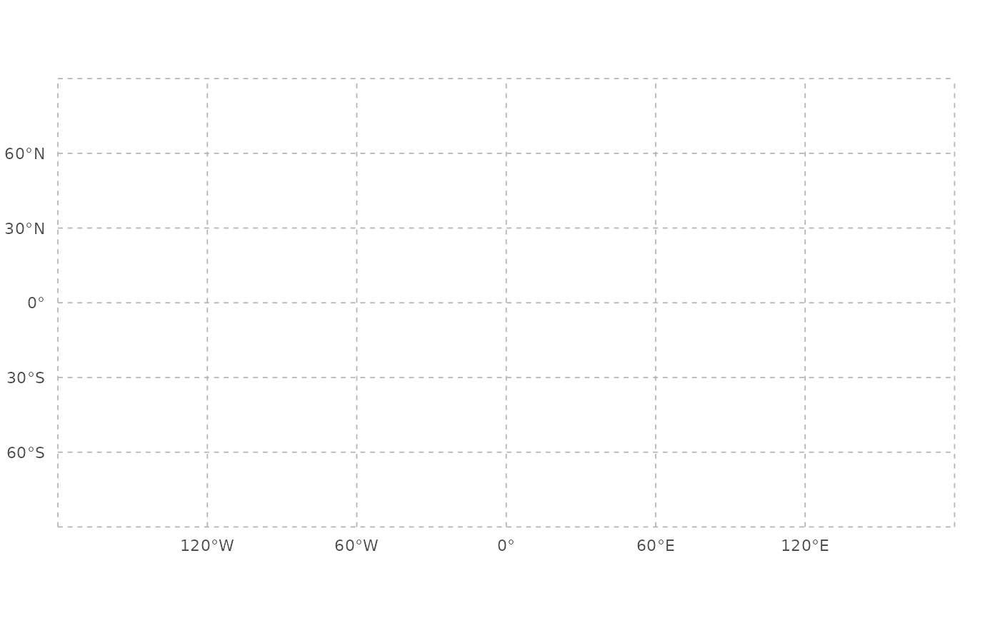

Global graticule annotation for ggplot2 maps
Source:R/annotation_graticule.R
annotation_graticule.RdDraw global latitude-longitude graticules with degree labels as annotation
layers for ggplot2 maps. Graticules are constructed in geographic
coordinates (EPSG:4326) over a user-defined window (given by xlim/ylim,
default: the full globe), optionally split at the antimeridian according to
the target CRS, and then transformed into the map CRS. Regional maps usually
do not need this function and can rely on the default coord_sf() axes.
Usage
annotation_graticule(
xlim = NULL,
ylim = NULL,
crs = "+proj=longlat +datum=WGS84",
lon_step = 60,
lat_step = 30,
line_color = "grey70",
line_width = 0.3,
line_type = "dashed",
label_color = "grey30",
label_size = 3,
label_offset = 5,
label_offset_lon = NULL,
label_offset_lat = NULL,
sides = c("left", "bottom"),
...,
line_alpha = 1,
label_family = "",
label_alpha = 1,
label_angle = 0,
label_format = NULL
)Arguments
- xlim
Numeric vector of length 2 giving the longitude range in degrees as
c(xmin, xmax)in longitude-latitude (WGS84, EPSG:4326). Longitudes are interpreted in[-180, 180]. If bothxlimandylimareNULL(default), the full globe(-180, 180)is used.- ylim
Numeric vector of length 2 giving the latitude range in degrees as
c(ymin, ymax)in longitude-latitude (WGS84, EPSG:4326). Latitudes are interpreted in[-90, 90]. If bothxlimandylimareNULL(default), the full globe(-90, 90)is used.- crs
Target coordinate reference system for the graticule, given as a PROJ string or
sf::crsobject. This should match the CRS used in your map layers andcoord_sf(). The default is a WGS84 longitude- latitude definition.- lon_step
Spacing in degrees between meridians. Default is
60.- lat_step
Spacing in degrees between parallels. Default is
30.- line_color
Line colour for graticule lines. Default is
"grey70".- line_width
Line width for graticule lines. Default is
0.3.- line_type
Line type for graticule lines. Default is
"dashed".- label_color
Text colour for labels. Default is
"grey30".- label_size
Text size for labels in millimeters (mm), passed to
ggplot2::geom_text(). Default is3. Note: This unit differs from the point unit (pt) used intheme(). To match a specific font size in points (e.g., 8 pt), uselabel_size = 8 / ggplot2::.pt.- label_offset
Common offset applied to all labels, in the units of the target CRS. For geographic CRSs (degrees), this is interpreted as degrees (default
5). For projected CRSs (e.g. metres), you typically need a much larger value (e.g.3e5for Robinson or azimuthal projections).- label_offset_lon
Optional offset applied only to longitude labels. If supplied, this overrides
label_offsetfor longitude labels.- label_offset_lat
Optional offset applied only to latitude labels. If supplied, this overrides
label_offsetfor latitude labels.- sides
Character vector indicating on which sides labels should be drawn. Any combination of
"bottom","top","left","right". Default isc("left", "bottom").- ...
Additional arguments forwarded to
ggplot2::geom_sf()for the graticule line layer.- line_alpha
Line transparency, range
[0, 1]. Default is1(opaque). If bothline_alphaandalphain...are supplied,line_alphatakes precedence.- label_family
Font family for labels (e.g., "sans", "serif", "mono"). Default is
""(system default).- label_alpha
Text transparency, range
[0, 1]. Default is1.- label_angle
Text rotation angle in degrees. Default is
0.- label_format
Optional function to format the degree labels. If
NULL(default), standard degree labels with N/S/E/W suffixes are used. If provided, it should be a function accepting a numeric vector and returning a character vector.
Value
A list of two ggplot2 layers: a geom_sf() layer for graticule
lines and a geom_text() layer for the labels.
Details
Graticules are always generated in WGS84 longitude-latitude (EPSG:4326).
When a non-zero central meridian (lon_0) is detected in the target CRS,
meridians and parallels can be split at the antimeridian via
sf::st_break_antimeridian() before being transformed, which avoids
unexpected line wrapping in projections centred away from 0 degrees.
Latitude labels at +/-90 degrees are always omitted. When drawing a full-globe
longitude-latitude map with a 0 degree central meridian (that is, when xlim and
ylim are both NULL and the CRS is geographic with lon_0 = 0),
longitude labels at +/-180 degrees are omitted (the corresponding graticule lines may
still be drawn).
Examples
library(ggplot2)
# Draw a graticule in geographic coordinates
ggplot() +
annotation_graticule(
lon_step = 60,
lat_step = 30,
label_offset = 5
) +
coord_sf(crs = "+proj=longlat +datum=WGS84") +
theme_void()
